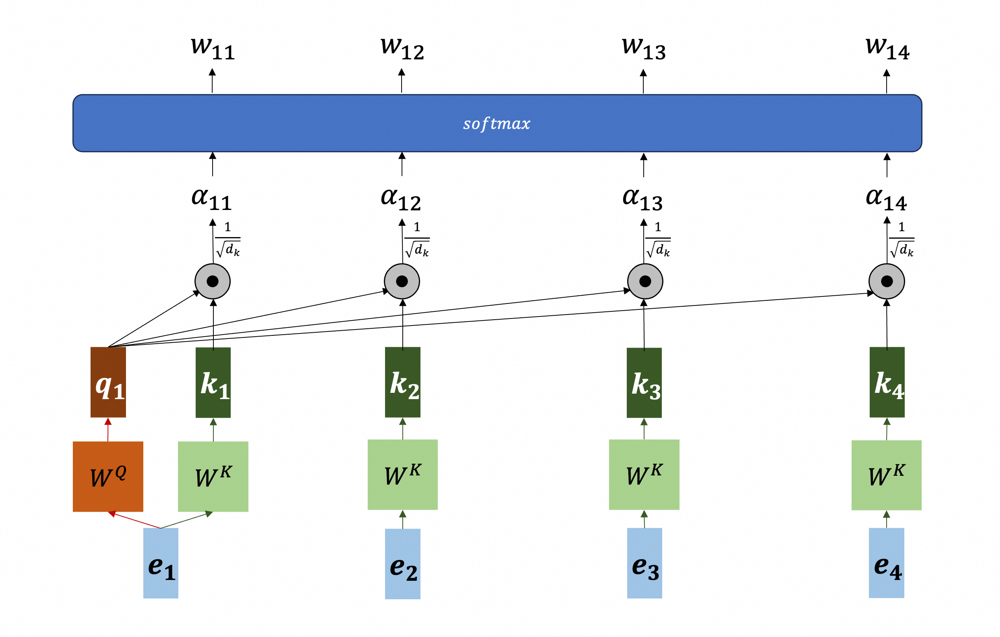
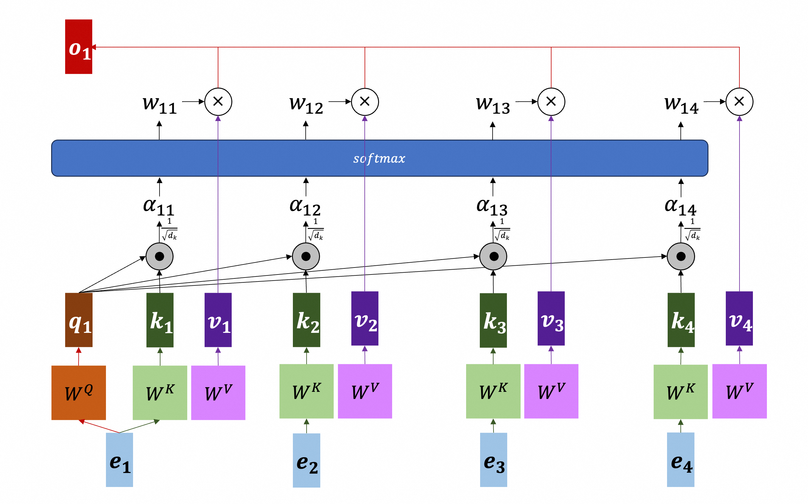
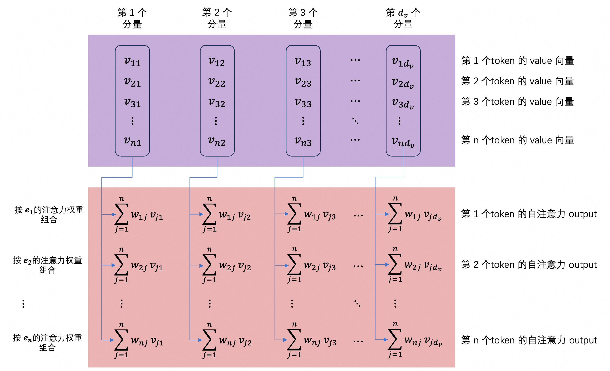

介绍 Transformer 的基础知识：自注意力（Self Attention）以及 Multi-Head Attention 的计算过程。
说明：数学上，向量 $\boldsymbol{v}$ 通常指列向量（即 $d \times 1$ 的矩阵），其线性投影记作 $\boldsymbol{M} \boldsymbol{v}$，其中 $\boldsymbol{M}$ 是投影矩阵，形状是 $r \times d$。若改用行向量表示，则需转置为 $\boldsymbol{v}^\top \boldsymbol{M}^\top$。而本文遵从 Transformer 的惯例：向量（如 embedding、query、key、value）特指行向量，其中 embedding 向量是 $1 \times d_{model}$，query 和 key 向量是 $1 \times d_k$，value 向量是 $1 \times d_v$（其中 $d_k$ 和 $d_v$ 不一定相等）。同时权重矩阵 $\boldsymbol{W}^Q$、$\boldsymbol{W}^K$ 和 $\boldsymbol{W}^V$ 的形状分别直接定义成 $d_{model} \times d_k$、$d_{model} \times d_k$ 和 $d_{model} \times d_v$，使得投影运算可以直接写成 $\boldsymbol{e} \boldsymbol{W}^Q$、$\boldsymbol{e} \boldsymbol{W}^K$、$\boldsymbol{e} \boldsymbol{W}^V$，无需额外转置。这样记的好处是更接近于编程：$n$ 个 token 的 embedding 向量组成 $n \times d_{model}$ 的矩阵，每行对应一个 token，批量投影只需一次矩阵乘法。
Self Attention (1)
假设一句话包含 4 个 token，它们的 embedding 分别是 $\boldsymbol{e}_1$、$\boldsymbol{e}_2$、$\boldsymbol{e}_3$ 和 $\boldsymbol{e}_4$。并假设权重矩阵（$\boldsymbol{W}^Q$、$\boldsymbol{W}^K$ 和 $\boldsymbol{W}^V$）已知。
计算 Attention Score (1.1)
计算各个 token 的 key 向量 $\boldsymbol{k}_i$（$i=1,2,3,4$）。
$$
\begin{aligned}
\boldsymbol{k}_1 & = \boldsymbol{e}_1 \boldsymbol{W}^K \\
\boldsymbol{k}_2 & = \boldsymbol{e}_2 \boldsymbol{W}^K \\
\boldsymbol{k}_3 & = \boldsymbol{e}_3 \boldsymbol{W}^K \\
\boldsymbol{k}_4 & = \boldsymbol{e}_4 \boldsymbol{W}^K
\end{aligned}
\tag{1}
$$
Token 的 key 向量定义我能被什么匹配到。
然后，以 token $\boldsymbol{e}_1$ 为例，计算它的 query 向量 $\boldsymbol{q}_1$：
$$
\boldsymbol{q}_1 = \boldsymbol{e}_1 \boldsymbol{W}^Q
\tag{2}
$$
Query 向量定义我在找什么。Token $\boldsymbol{e}_1$ 和 $\boldsymbol{e}_2$ 的匹配度（关联性）就是注意力得分——即 $\boldsymbol{e}_1$ 对 $\boldsymbol{e}_2$ 的注意力，记作 $\alpha_{12}$。
$$
\alpha_{12} = \boldsymbol{q}_1 \cdot \boldsymbol{k}_2
$$
同理，计算 token $\boldsymbol{e}_1$ 和 $\boldsymbol{e}_3$、$\boldsymbol{e}_4$ 的注意力得分，以及自己和自己的注意力得分。汇总如下：
$$
\begin{aligned}
\alpha_{11} & = \boldsymbol{q}_1 \cdot \boldsymbol{k}_1 \\
\alpha_{12} & = \boldsymbol{q}_1 \cdot \boldsymbol{k}_2 \\
\alpha_{13} & = \boldsymbol{q}_1 \cdot \boldsymbol{k}_3 \\
\alpha_{14} & = \boldsymbol{q}_1 \cdot \boldsymbol{k}_4
\end{aligned}
$$
可见，注意力得分就是 query 向量和 key 向量的点积或内积（dot-product 或 inner-product）。
数学上，两个向量的点积是：
$$
\boldsymbol{q}_i \cdot \boldsymbol{k}_j = \lVert \boldsymbol{q}_i \rVert \lVert \boldsymbol{k}_j \rVert \cos(\theta)
$$
其中 $\theta$ 是两个向量的夹角。所以，点积就是两个向量的模长相乘，再乘以夹角的余弦值。也就是说，在模长相近的情况下，两个向量方向越一致（夹角越小），注意力得分越高。换言之，token 之间的相关性，体现在 query 向量和 key 向量的夹角上。
假设 query 向量代表“它”，句子中 token 的 key 向量分别代表：
- $\boldsymbol{k}_1$：行人
- $\boldsymbol{k}_2$：街道
- $\boldsymbol{k}_3$：黄狗
- $\boldsymbol{k}_4$：下雨
经过训练，模型会让“它”的 query 向量和“黄狗”的 key 向量夹角较小，于是：
$$
\begin{aligned}
\boldsymbol{q}_{\text{它}} \cdot \boldsymbol{k}_{\text{黄狗}} \gg \boldsymbol{q}_{\text{它}} \cdot \boldsymbol{k}_{\text{行人}} \\
\boldsymbol{q}_{\text{它}} \cdot \boldsymbol{k}_{\text{黄狗}} \gg \boldsymbol{q}_{\text{它}} \cdot \boldsymbol{k}_{\text{街道}} \\
\boldsymbol{q}_{\text{它}} \cdot \boldsymbol{k}_{\text{黄狗}} \gg \boldsymbol{q}_{\text{它}} \cdot \boldsymbol{k}_{\text{下雨}}
\end{aligned}
$$
为什么不是直接用原始向量？因为原始 embedding 向量并不适合直接做相似度比较。模型会用 $\boldsymbol{W}^Q$、$\boldsymbol{W}^K$ 和 $\boldsymbol{W}^V$ 把输入投影到三个不同的子空间：
- $Q$ 空间：定义“我在找什么”
- $K$ 空间：定义“我能被什么匹配到”
- $V$ 空间：定义“我能提供什么信息”（见后文）
所以，注意力不是简单比较两个词像不像，而是在学出来的语义子空间里比较投影的相似度。
补充：点积只是计算 Attention Score 的一种方法。实际上，还有别的计算方法，例如 Additive（加性注意力）：$\tanh(\boldsymbol{q} + \boldsymbol{k}) \boldsymbol{W}$，过程是：
- 把 query 和 key 向量逐元素相加（而不是点乘），结果是一个行向量；
- 相加后的向量做逐元素 $\tanh$（双曲正切函数），结果仍是一个行向量；
- 最后经过一个线性层（$\boldsymbol{W}$ 是一个列向量），得到标量 $\alpha$（注意力得分）。
模长代表什么 (1.2)
上一节说，在模长相近的情况下，两个向量方向越一致（夹角越小），注意力得分越高。换言之，token 之间的相关性，体现在 query 向量和 key 向量的夹角上。可是，影响点积结果的不止夹角，还有两个向量的模长。
在训练好的表示空间里，一个向量的模长大，通常意味着这个 token 在该注意力头所关注的维度上更活跃、更突出。比如句子“我去吃饭”中，“我”的向量可能模长最大，因为它作为主语与后面每个词都有关联；而“去”的模长较小，角色相对单一。
点积天然保留了这个信息：
- 若某个 token 的 key 向量模长较大，它会与更多 query 产生较大的点积，从而更容易被其他 token 关注到；
- 若某个 token 的 query 向量模长较大，它对所有 key 的点积都会整体变大，得分之间的绝对差距也随之放大；而 softmax 对数值差距敏感，经过 softmax 后，注意力分布会更尖锐，更集中在得分最高的几个 key 上。注：softmax 在下一节引入。
所以，注意力得分大致可以理解为：
$$
\text{AttentionScore} = \text{双方重要性} \times \text{匹配度}
$$
确实也有些模型会显式做 QK-Norm，例如部分现代 LLM（如 Qwen3）会在计算点积前对每个头的 $\boldsymbol{q}$、$\boldsymbol{k}$ 做 RMSNorm 或 L2 归一化。这就更接近只看向量的方向（匹配度）。不过实际实现通常还会乘一个可学习缩放，相当于一个可学温度（用于捕获 token 的重要性）。
归一化成注意力权重 (1.3)
第 1.1 节得到的注意力得分 $\alpha_{1j}$ 只是原始匹配分数，它们可以是任意实数，不能直接当作权重使用。为了让它们变成一组注意力权重（大于0，且和为1），需要对它们做归一化。最常用的归一化方法是 softmax。
这里有一个细节：原始 Transformer 在 softmax 之前还会除以 $\sqrt{d_k}$（其中 $d_k$ 是 key 向量的维度）。注意，这里把缩放后的得分仍记作 $\alpha_{1j}$，即先计算缩放后的得分，再做 softmax。
$$
\alpha_{1j} = \frac{\boldsymbol{q}_1 \cdot \boldsymbol{k}_j}{\sqrt{d_k}} \quad \quad j=1,2,3,4
\tag{3}
$$
这一步叫缩放点积。缩放不是归一化，缩放之后仍然不是权重——可能小于0，总和也不为1。缩放的作用是防止 $d_k$ 较大时点积值过大，导致 softmax 进入梯度极小的饱和区，影响训练稳定性。
缩放之后，送入 softmax 进行归一化。对于 token $\boldsymbol{e}_1$，归一化得到：
$$
w_{1j} = \operatorname{softmax}\left(\alpha_{1j}\right) = \frac{\exp(\alpha_{1j})}{\sum_{t=1}^4 \exp(\alpha_{1t})} \quad \quad j=1,2,3,4
$$
这样得到的 $w_{1j}$ 都为正且和为 1，可以解释为权重，即注意力权重（Attention Weight）。或者说，$w_{1j}$ 表示 token $\boldsymbol{e}_1$ 在聚合上下文信息时，分配给 token $\boldsymbol{e}_j$ 的注意力的多少。
总结起来，注意力权重（Attention Weight）计算过程如下：
$$
w_{1j} = \operatorname{softmax}\left(\frac{\boldsymbol{q}_1 \cdot \boldsymbol{k}_j}{\sqrt{d_k}}\right) \quad \quad j=1,2,3,4
$$
也可以通过下图表示：

说明：在分类生成式模型的第 6.4 节，我们也曾采用 softmax 进行归一化，那里用 softmax 有其背后的道理；相比之下，这里就没有那么多道理可言，单纯为了归一化成权重。也可以不用 softmax，有人尝试过使用 ReLU，效果也不错。
使用注意力权重组合 value 向量 (1.4)
第 1.1 节说过，value 向量定义我能提供什么信息：每个 token 的 embedding 向量经过 $\boldsymbol{W}^V$ 投影，得到它的 value 向量：
$$
\boldsymbol{v}_i = \boldsymbol{e}_i \boldsymbol{W}^V \quad \quad i=1,2,3,4
\tag{4}
$$
每个 $\boldsymbol{v}_i$ 是 $1 \times d_v$ 的行向量。文首说明已声明 $d_v$ 和 $d_k$ 不一定相等：key 向量负责“被匹配”，value 向量负责“提供信息”，两件事不必共用同一个维度。
有了注意力权重，token $\boldsymbol{e}_1$ 就把全句 token 的 value 向量组合起来：
$$
\boldsymbol{o}_1 = \sum_{j=1}^4 w_{1j} \boldsymbol{v}_j
\tag{5}
$$
即按注意力权重对 value 向量加权求和，得到 $\boldsymbol{o}_1$（同样是 $1 \times d_v$ 的行向量），也就是 token $\boldsymbol{e}_1$ 的自注意力输出。整个过程也可以通过下图表示：

显然，token $\boldsymbol{e}_1$ 的自注意力输出 $\boldsymbol{o}_1$ 包含了所有 token 的信息——所有 token 的 value 向量（value 向量提供信息）。更重要的是，若 token $\boldsymbol{e}_1$ 和 $\boldsymbol{e}_j$ 相关性大，则权重 $w_1j$ 就大，其它权重就小（因为它们的和为 1），最终导致 $\boldsymbol{o}_1$ 包含 $\boldsymbol{v}_j$ 的信息更多。
接前文的例子：若训练后“它”对“黄狗”的注意力权重接近 1、对其余 token 的权重接近 0，则 $\boldsymbol{o}_{\text{它}}$ 几乎等于 $\boldsymbol{v}_{\text{黄狗}}$——“黄狗”提供给上下文的信息，几乎原封不动地流进了“它”的输出。
一句话：注意力权重决定“取谁的、取多少”，value 向量决定“给什么”。
同理，其它几个 token 也都用自己的 query 向量得到一行注意力权重，组合出自己的自注意力输出 $\boldsymbol{o}_i$，$i=2,3,4$；4 个输出按行叠起来，组成一个 $4 \times d_v$ 的矩阵，即整句话的新表示。
原来的 4 个 token 的 embedding 是独立的，不包含上下文信息。经过自注意力层的处理，得到的新表示还是 4 个向量（$d_v$ 维），但不同的是，每个向量包含了上下文信息，并考虑了原 token 的相关性。
自注意力计算的矩阵形式 (1.5)
前面几节从 $\boldsymbol{e}_1$ 的角度描述了如何计算一个 token 的自注意力输出。其它 token 也要进行同样的计算。整个过程可以通过矩阵运算的方式批量完成。
如前约定：
- 每个 token 的 embedding 是 $d_{model}$ 维向量；
- $n$ 个 token 按行排成一个 $n \times d_{model}$ 的矩阵，记作 $\boldsymbol{X}$，$\boldsymbol{X} \in \mathbb{R}^{n \times d_{model}}$；
- 权重矩阵 $\boldsymbol{W}^Q \in \mathbb{R}^{d_{model} \times d_k}$；
- 权重矩阵 $\boldsymbol{W}^K \in \mathbb{R}^{d_{model} \times d_k}$；
- 权重矩阵 $\boldsymbol{W}^V \in \mathbb{R}^{d_{model} \times d_v}$；
计算各个 token 的 query 向量：
$$
\boldsymbol{Q} = \boldsymbol{X} \boldsymbol{W}^Q
$$
这是第 1.1 节中公式(2)的矩阵形式，一次性计算出所有 token 的 query 向量；矩阵 $\boldsymbol{Q} \in \mathbb{R}^{n \times d_k}$，每行是一个 token 的 query 向量（$d_k$ 维）；展开来看：
$$
\boldsymbol{Q} =
\begin{bmatrix}
q_{11} & q_{12} & \cdots & q_{1d_k} \\
q_{21} & q_{22} & \cdots & q_{2d_k} \\
q_{31} & q_{32} & \cdots & q_{3d_k} \\
\vdots & \vdots & \ddots & \vdots \\
q_{n1} & q_{n2} & \cdots & q_{nd_k}
\end{bmatrix} =
\begin{bmatrix}
\boldsymbol{q}_1 \\
\boldsymbol{q}_2 \\
\boldsymbol{q}_3 \\
\vdots \\
\boldsymbol{q}_n
\end{bmatrix}
$$
同理，计算各个 token 的 key 向量：
$$
\boldsymbol{K} = \boldsymbol{X} \boldsymbol{W}^K
$$
这是第 1.1 节中公式(1)的矩阵形式，一次性计算出所有 token 的 key 向量；矩阵 $\boldsymbol{K} \in \mathbb{R}^{n \times d_k}$，每行是一个 token 的 key 向量（$d_k$ 维）。展开：
$$
\boldsymbol{K} =
\begin{bmatrix}
k_{11} & k_{12} & \cdots & k_{1d_k} \\
k_{21} & k_{22} & \cdots & k_{2d_k} \\
k_{31} & k_{32} & \cdots & k_{3d_k} \\
\vdots & \vdots & \ddots & \vdots \\
k_{n1} & k_{n2} & \cdots & k_{nd_k}
\end{bmatrix} =
\begin{bmatrix}
\boldsymbol{k}_1 \\
\boldsymbol{k}_2 \\
\boldsymbol{k}_3 \\
\vdots \\
\boldsymbol{k}_n
\end{bmatrix}
$$
说明：key 向量分量 $k_{ij}$ 的 $k$ 和 $d_k$ 的 $k$ 无关。
同理，一次性计算出所有 token 的 value 向量（这是第 1.4 节公式(4)的矩阵形式）：
$$
\boldsymbol{V} = \boldsymbol{X} \boldsymbol{W}^V
$$
矩阵 $\boldsymbol{V} \in \mathbb{R}^{n \times d_v}$，每行是一个 token 的 value 向量（$d_v$ 维）。展开来看：
$$
\boldsymbol{V} =
\begin{bmatrix}
v_{11} & v_{12} & \cdots & v_{1d_v} \\
v_{21} & v_{22} & \cdots & v_{2d_v} \\
v_{31} & v_{32} & \cdots & v_{3d_v} \\
\vdots & \vdots & \ddots & \vdots \\
v_{n1} & v_{n2} & \cdots & v_{nd_v}
\end{bmatrix} =
\begin{bmatrix}
\boldsymbol{v}_1 \\
\boldsymbol{v}_2 \\
\boldsymbol{v}_3 \\
\vdots \\
\boldsymbol{v}_n
\end{bmatrix}
$$
说明：value 向量分量 $v_{ij}$ 的 $v$ 和 $d_v$ 的 $v$ 无关。
计算所有 token 的注意力得分（把缩放点积，即除以 $\sqrt{d_k}$，也一起做了）：
$$
\boldsymbol{A} = \frac{\boldsymbol{Q} \boldsymbol{K}^\top}{\sqrt{d_k}} =
\frac{1}{\sqrt{d_k}}
\begin{bmatrix}
q_{11} & q_{12} & \cdots & q_{1d_k} \\
q_{21} & q_{22} & \cdots & q_{2d_k} \\
q_{31} & q_{32} & \cdots & q_{3d_k} \\
\vdots & \vdots & \ddots & \vdots \\
q_{n1} & q_{n2} & \cdots & q_{nd_k}
\end{bmatrix}
\begin{bmatrix}
k_{11} & k_{21} & k_{31} & \cdots & k_{n1} \\
k_{12} & k_{22} & k_{32} & \cdots & k_{n2} \\
\vdots & \vdots & \vdots & \ddots & \vdots \\
k_{1d_k} & k_{2d_k} & k_{3d_k} & \cdots & k_{nd_k}
\end{bmatrix}
$$
$$
= \begin{bmatrix}
\frac{\boldsymbol{q}_1 \cdot \boldsymbol{k}_1}{\sqrt{d_k}} & \frac{\boldsymbol{q}_1 \cdot \boldsymbol{k}_2}{\sqrt{d_k}} & \cdots & \frac{\boldsymbol{q}_1 \cdot \boldsymbol{k}_n}{\sqrt{d_k}} \\
\frac{\boldsymbol{q}_2 \cdot \boldsymbol{k}_1}{\sqrt{d_k}} & \frac{\boldsymbol{q}_2 \cdot \boldsymbol{k}_2}{\sqrt{d_k}} & \cdots & \frac{\boldsymbol{q}_2 \cdot \boldsymbol{k}_n}{\sqrt{d_k}} \\
\frac{\boldsymbol{q}_3 \cdot \boldsymbol{k}_1}{\sqrt{d_k}} & \frac{\boldsymbol{q}_3 \cdot \boldsymbol{k}_2}{\sqrt{d_k}} & \cdots & \frac{\boldsymbol{q}_3 \cdot \boldsymbol{k}_n}{\sqrt{d_k}} \\
\vdots & \vdots & \ddots & \vdots \\
\frac{\boldsymbol{q}_n \cdot \boldsymbol{k}_1}{\sqrt{d_k}} & \frac{\boldsymbol{q}_n \cdot \boldsymbol{k}_2}{\sqrt{d_k}} & \cdots & \frac{\boldsymbol{q}_n \cdot \boldsymbol{k}_n}{\sqrt{d_k}}
\end{bmatrix}
$$
这就是第 1.3 节公式(3)的矩阵形式。每个 token 的注意力得分是一个 $n$ 维向量（与 $n$ 个 token 的相关性），所以，结果是一个 $n \times n$ 的矩阵，即 $\boldsymbol{A} \in \mathbb{R}^{n \times n}$，每行代表一个 token 的注意力得分。
矩阵 $\boldsymbol{A}$ 里的元素还是原始得分：第 $i$ 行就是 token $\boldsymbol{e}_i$ 对所有 token 的注意力得分（缩放后），按第 1.3 节的记法记作 $\alpha_{ij}$，它们可能不为正，且和不为1；根据第 1.3 节的知识，想要得到注意力权重，就得进行归一化，常用的方法是 softmax。显然，每个 token 的注意力得分都要归一化成权重，也就是要对矩阵 $\boldsymbol{A}$ 的每一行独立进行归一化，行与行之间互不影响：
$$
w_{ij} = \frac{\exp(\alpha_{ij})}{\sum_{t=1}^n \exp(\alpha_{it})} \quad \quad i,j=1,2,\dots,n
$$
归一化之后，每行的和为 1；第 $i$ 行就是 token $\boldsymbol{e}_i$ 分配给全句 $n$ 个 token 的注意力权重——第 1 行正是第 1.3 节的 $w_{1j}$。归一化之后的矩阵记为：
$$
\operatorname{softmax}\left(\boldsymbol{A}\right) = \operatorname{softmax}\left(\frac{\boldsymbol{Q} \boldsymbol{K}^\top}{\sqrt{d_k}}\right) =
\begin{bmatrix}
w_{11} & w_{12} & \cdots & w_{1n} \\
w_{21} & w_{22} & \cdots & w_{2n} \\
w_{31} & w_{32} & \cdots & w_{3n} \\
\vdots & \vdots & \ddots & \vdots \\
w_{n1} & w_{n2} & \cdots & w_{nn}
\end{bmatrix}
$$
$$
\text{对所有 } i=1,2,\dots,n \text{ 满足：} \sum_{t=1}^n w_{it} = 1
$$
注：softmax 作用在矩阵上时，约定为按行归一化，行与行之间互相独立。
最后，用注意力权重组合 value 向量：
$$
\boldsymbol{O} = \operatorname{softmax}\left(\boldsymbol{A}\right) \boldsymbol{V} =
\operatorname{softmax}\left(\frac{\boldsymbol{Q} \boldsymbol{K}^\top}{\sqrt{d_k}}\right) \boldsymbol{V}
\tag{6}
$$
公式(6)就是 Transformer 论文（Attention Is All You Need）中的公式(1)。
矩阵 $\boldsymbol{O}$ 维度链是 $(n \times n)(n \times d_v) = n \times d_v$，即 $\boldsymbol{O} \in \mathbb{R}^{n \times d_v}$。把它展开：
$$
\boldsymbol{O} =
\begin{bmatrix}
\sum_{j=1}^n w_{1j} v_{j1} & \sum_{j=1}^n w_{1j} v_{j2} & \sum_{j=1}^n w_{1j} v_{j3} & \cdots & \sum_{j=1}^n w_{1j} v_{jd_v} \\
\sum_{j=1}^n w_{2j} v_{j1} & \sum_{j=1}^n w_{2j} v_{j2} & \sum_{j=1}^n w_{2j} v_{j3} & \cdots & \sum_{j=1}^n w_{2j} v_{jd_v} \\
\sum_{j=1}^n w_{3j} v_{j1} & \sum_{j=1}^n w_{3j} v_{j2} & \sum_{j=1}^n w_{3j} v_{j3} & \cdots & \sum_{j=1}^n w_{3j} v_{jd_v} \\
\vdots & \vdots & \vdots & \ddots & \vdots \\
\sum_{j=1}^n w_{nj} v_{j1} & \sum_{j=1}^n w_{nj} v_{j2} & \sum_{j=1}^n w_{nj} v_{j3} & \cdots & \sum_{j=1}^n w_{nj} v_{jd_v}
\end{bmatrix}
$$
和其它矩阵一样，一行对应一个 token。在这里，一行就是一个 token 的自注意力输出。以第一行（对应 token $\boldsymbol{e}_1$）为例：
- 第 1 行第 1 个元素，即 $\boldsymbol{O}_{11}$：所有 value 向量的第 1 个分量的线性组合（以 $\boldsymbol{e}_1$ 的权重组合）；
- 第 1 行第 2 个元素，即 $\boldsymbol{O}_{12}$：所有 value 向量的第 2 个分量的线性组合（以 $\boldsymbol{e}_1$ 的权重组合）；
- ……
- 第 1 行第 $d_v$ 个元素，即 $\boldsymbol{O}_{1d_v}$：所有 value 向量的第 $d_v$ 个分量的线性组合（以 $\boldsymbol{e}_1$ 的权重组合）；
也就是说，第 1 行的每个分量都是所有 value 向量对应分量的线性组合（以 $\boldsymbol{e}_1$ 的权重组合），等价于说，第 1 行是所有 value 向量的线性组合（以 $\boldsymbol{e}_1$ 的权重组合），即：
$$
\boldsymbol{o}_1 = \sum_{j=1}^n w_{1j} \boldsymbol{v}_j
\tag{7}
$$
公式(7)不就是第 1.4 节的公式(5)吗？其它行也一样，只不过组合权重是对应 token 的注意力权重。所以，公式(6)就是公式(5)的矩阵形式；可以这样理解：
$$
\boldsymbol{O} =
\begin{bmatrix}
\sum_{j=1}^n w_{1j} \boldsymbol{v}_j \\
\sum_{j=1}^n w_{2j} \boldsymbol{v}_j \\
\vdots \\
\sum_{j=1}^n w_{nj} \boldsymbol{v}_j
\end{bmatrix} =
\begin{bmatrix}
\text{使用} \boldsymbol{e}_1 \text{的注意力权重线性组合所有 value 向量} \\
\text{使用} \boldsymbol{e}_2 \text{的注意力权重线性组合所有 value 向量} \\
\vdots \\
\text{使用} \boldsymbol{e}_n \text{的注意力权重线性组合所有 value 向量}
\end{bmatrix}
$$
数学中，常见的是列向量的线性组合按此写法，其实行向量也一样，对应分量线性组合而已。
每一行是对应 token 的注意力权重对所有 value 向量的线性组合。可以表示成下图：

总结起来，Self Attention 的计算就是几个简单的矩阵相乘和一次按行 softmax：
$$
\begin{aligned}
\boldsymbol{Q} & = \boldsymbol{X} \boldsymbol{W}^Q \\
\\
\boldsymbol{K} & = \boldsymbol{X} \boldsymbol{W}^K \\
\\
\boldsymbol{V} & = \boldsymbol{X} \boldsymbol{W}^V \\
\\
\boldsymbol{O} & = \operatorname{softmax}\left(\frac{\boldsymbol{Q} \boldsymbol{K}^\top}{\sqrt{d_k}}\right) \boldsymbol{V}
\end{aligned}
$$
就这样，Self Attention 把一个句子（$n$ 个 token 的 embedding 向量）转换成另外一个“句子”，但这个“句子”已经不是人类能够读懂的了：每个“单词”包含了句子中所有其它“单词”的信息——相关性越高，包含对方的信息越多。类似于电影《降临》中的外星文字？
注1：其实，转换后的“句子”中的“单词”可以不是 $d_{model}$ 维向量；但 Transformer 论文中，输入输出向量维度相等，还是 $d_{model}$ 维。
注2：输出“句子”的“单词”叫做 output vector，下文统一叫做输出向量或output vector。
Multi-Head Attention (2)
从单头到多头 (2.1)
首先，把第1节介绍的自注意力机制叫做单头 Self Attention。如前所述，单头 Self Attention 的每个输出向量都包含了其它 token 的信息，包含某个 token 的信息的多少，取决于与那个 token 的关联性的大小。虽然训练得到的权重矩阵 $\boldsymbol{W}^Q$ 和 $\boldsymbol{W}^K$ 可能能够比较智能地抓取 token 之间的关联性，但它们只能抓取一种关联性，或者更准确地说，只能在一个空间上分析 token 之间的关联性：因为 $\boldsymbol{W}^Q$ 和 $\boldsymbol{W}^K$ 把输入 token 投影到一个空间（$\boldsymbol{Q}$ 空间和 $\boldsymbol{K}$ 空间实际上是一个空间），在此空间内分析彼此的关联性（$\boldsymbol{q}$ 与 $\boldsymbol{k}$ 点积大小）。
Multi-Head Attention 是单头 Self Attention 的扩展：功能上，它还是把一个句子（$n$ 个 token 的 embedding 向量）转换成另外一个“句子”；但在多个独立的空间内抓取 token 之间的关联。
具体地说：构造多组权重矩阵（$\boldsymbol{W}^Q$、$\boldsymbol{W}^K$、$\boldsymbol{W}^V$），把单头 Self Attention 重复多遍，输出多个“句子”，然后，把多个句子拼成一个“句子”——同位置的输出向量直接拼接。其中多组权重矩阵，就是把输入 token 投影到多个独立空间（每组的 $\boldsymbol{Q}$ 和 $\boldsymbol{K}$ 算一个空间）；然后重复 Self Attention，在这些独立的空间中计算 token 之间的关联性，目的是抓取 token 之间的多种关联关系。
实现上，多次 Self Attention（多组权重矩阵）的 $d_k$ 和 $d_v$ 可以完全无关，也可以和 $d_{model}$ 无关。例如，第一个 Self Attention 的每个输出向量是 $d_{v1}$ 维，第二个是 $d_{v2}$ 维（$d_{v1}$ 和 $d_{v2}$ 可以不相等），以此类推……最终拼接出的每个输出向量是 $d_{v1} + d_{v2} + \cdots$ 维。也就是，把 $n$ 个 $d_{model}$ 维的向量（原句子）转成 $n$ 个 $d_{v1} + d_{v2} + \cdots$ 维的向量。这也完全没有问题。
不过，在 Transformer 论文中是这么选择的：
- 假设 head 数是 $h$；即有 $h$ 组权重矩阵 $\boldsymbol{W}_i^Q$、$\boldsymbol{W}_i^K$、$\boldsymbol{W}_i^V$，$i=1,2,\cdots,h$；做 $h$ 次 Self Attention；
- 每个 Self Attention 的 $d_k^i = \frac{d_k}{h}$；$i=1,2,\cdots,h$；其中 $d_k$ 表示第1节中的单头 Self Attention 的 $d_k$；
- 每个 Self Attention 的 $d_v^i = \frac{d_v}{h}$；$i=1,2,\cdots,h$；其中 $d_v$ 表示第1节中的单头 Self Attention 的 $d_v$；
假如第1节中的单头 Self Attention 参数如下（论文中确实是这么假设的）：
$$
\begin{aligned}
& d_{model} = 512 \\
& d_k = 512 \\
& d_v = 512 \\
\\
& \boldsymbol{W}^Q \in \mathbb{R}^{512 \times 512} \\
& \boldsymbol{W}^K \in \mathbb{R}^{512 \times 512} \\
& \boldsymbol{W}^V \in \mathbb{R}^{512 \times 512}
\end{aligned}
$$
且假如 $h=8$，则 Multi-Head Attention 参数如下：
$$
\begin{aligned}
& d_{model} = 512 \\
& d_k^i = 64 \\
& d_v^i = 64 \\
\\
& \boldsymbol{W}_i^Q \in \mathbb{R}^{512 \times 64} \\
& \boldsymbol{W}_i^K \in \mathbb{R}^{512 \times 64} \\
& \boldsymbol{W}_i^V \in \mathbb{R}^{512 \times 64} \\
\\
& \text{其中 }i=1,2,\cdots,h
\end{aligned}
$$
显然，query、key 和 value 向量都是 64 维的；8 次 Self Attention 之后，原句子被转换成 8 个句子；这 8 个句子长度相等（都是 $n$ 个向量），每个向量都是 64 维，把它们对应拼起来，又得到一个句子：$n$ 个向量，每个向量 512 维。
可见，若 $h=1$，Multi-Head Attention 就退化成第1节中的单头 Self Attention。